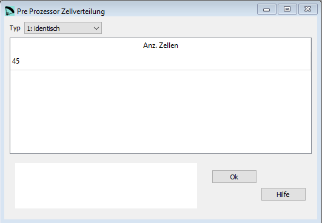
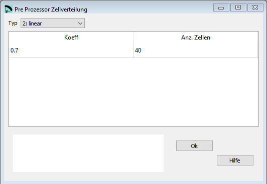
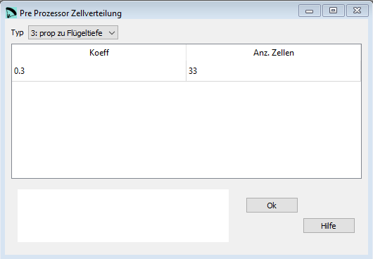
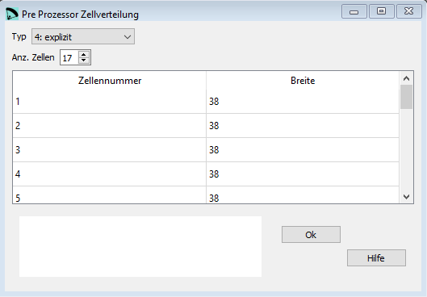

Pre-Prozessor Zellverteilung¶
Im Fenster Zellverteilung wird ein Teil der Parameter aus dem letzten Abschnitt der Eingabedatei des Pre-Prozessors editiert.
Es gibt vier verschiedene Möglichkeiten die Zellverteilung zu definieren.
Typ 1: identische Zellverteilung¶
{kind=link}
Rohdaten:
**********************************
* 4. Cells distribution
**********************************
1
45
Der Flügel hat 45 Zellen, alle Zellen sind genau gleich breit.
Typ 2: lineare Verkleinerung der Zellen nach aussen¶
{kind=link}
Rohdaten:
**********************************
* 4. Cells distribution
**********************************
2
0.7
40
Der Flügel hat 40 Zellen.
Der Koeffizient von 0.7 definiert die Zellverkleinerung nach aussen.
Wert = 1: alle Zellen sind genau gleich breit
Wert = 0: die äussersten Zellen haben eine minimale Breite
Typ 3: Verkleinerung proportional zur Flügeltiefe¶
{kind=link}
Rohdaten:
**********************************
* 4. Cells distribution
**********************************
3
0.3
33
Der Flügel hat 33 Zellen.
Der Koeffizient von 0.3 definiert die Zellverkleinerung welche proportional zur Flügeltiefe abnimmt.
Wert = 1: alle Zellen sind genau gleich breit, unabhängig von der Flügeltiefe
Wert = 0: die Zellbreit nimmt strikt proportional zur Flügeltiefe ab
Typ 4: explizite definition pro Zelle¶
{kind=link}
Rohdaten:
**********************************
* 4. Cells distribution
**********************************
4
17
1 38
2 38
3 38
4 38
5 38
6 37
7 37
8 37
9 36
10 35
11 35
12 30
13 28
14 27
15 25
16 24
17 20.2
Obiges Beispiel definiert einen Flügel mit 33 Zellen. Nr 1 ist in der mitte, dann jeweils noch 16 Zellen zu beiden Seiten.
Die zweite Zahl definiert die Zellenbreite in cm. Wenn die Summe der Zellenbreiten nicht mit der definierten Gesammtbreite des Flügels übereinstimmt, dann korrigiert das der Pre-Prozessor während der definitiven Berechnung des Flügels.
Das Beispiel unten zeigt einen Flügel mit 18 Zellen.
Für eine gerade Anzahl Zellen braucht es einen Trick: die mittlere Zelle muss mit einer Breite von 0.0 definiert werden. Nach aussen folgen dann im Beispiel noch jeweils noch 9 Zellen auf beide Seiten.:
**********************************
* 4. Cells distribution
**********************************
4
10
1 0.0
2 38
3 38
4 38
5 38
6 37
7 37
8 37
9 36
10 35
Eine detaillierte Beschreibung in englisch findest Du auf der Laboratori d'envol website.